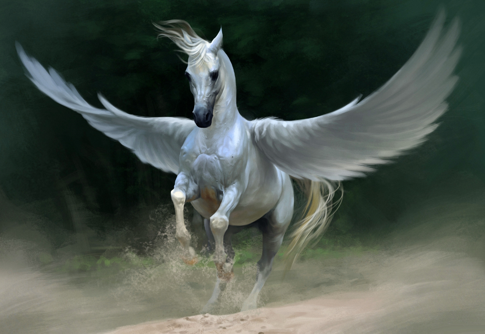
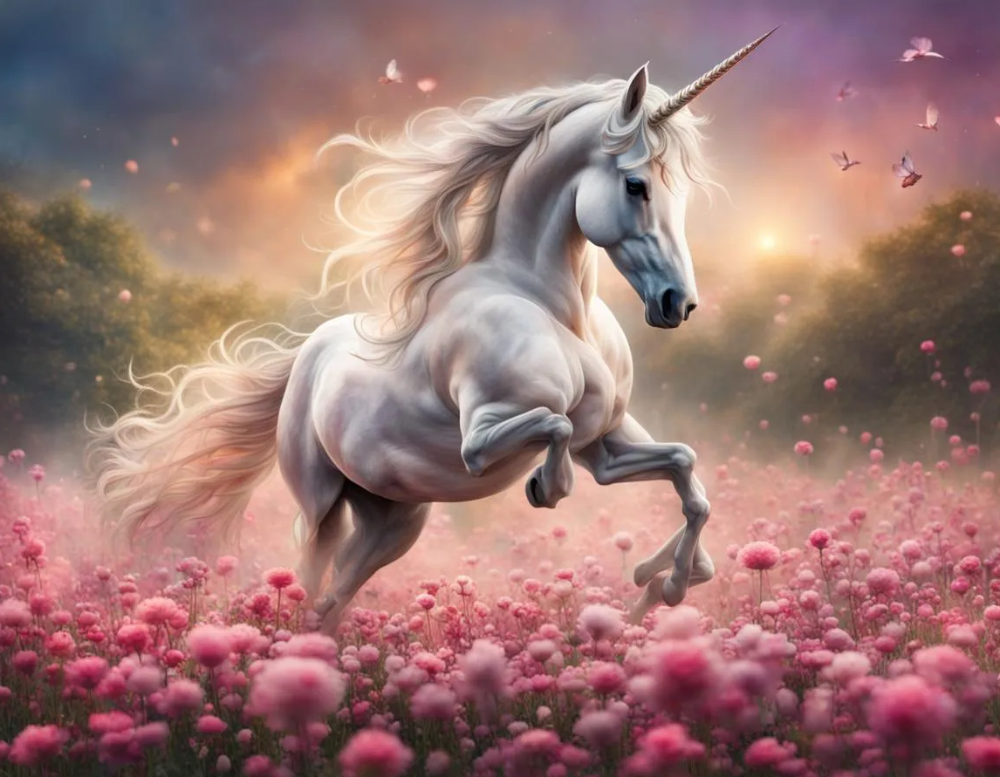
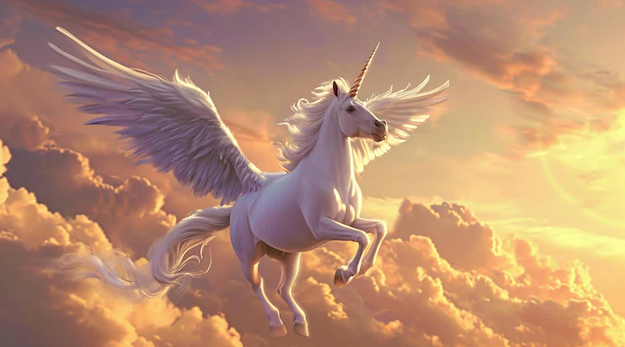

Willkommen im Lexikon der Fabelwesen! Hier findest du eine Sammlung mystischer Kreaturen aus Legenden, Mythen und Fantasy-Welten. Jedes dieser Wesen hat seine eigene Geschichte, besondere Fähigkeiten und symbolische Bedeutung in verschiedenen Kulturen.
Das Pegasus und das Einhorn
 Die Mischung
